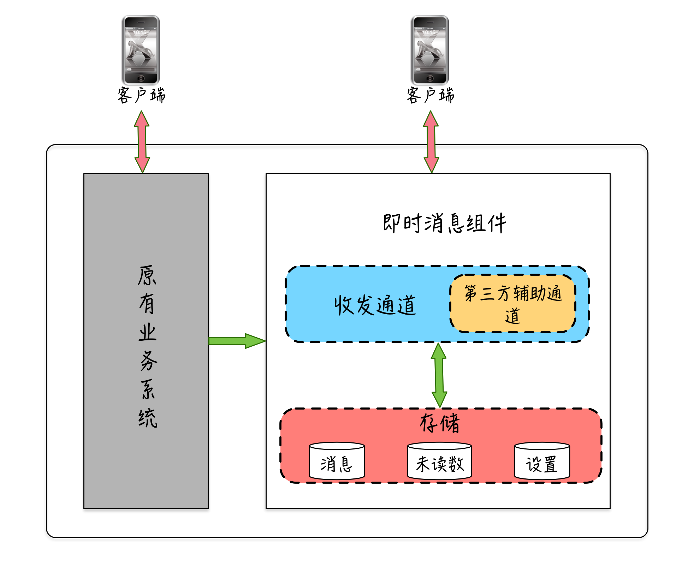
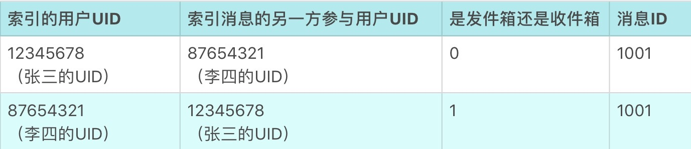
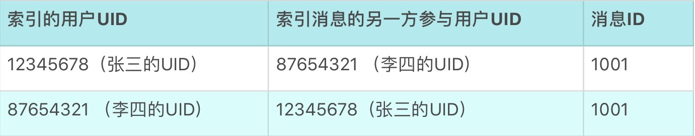
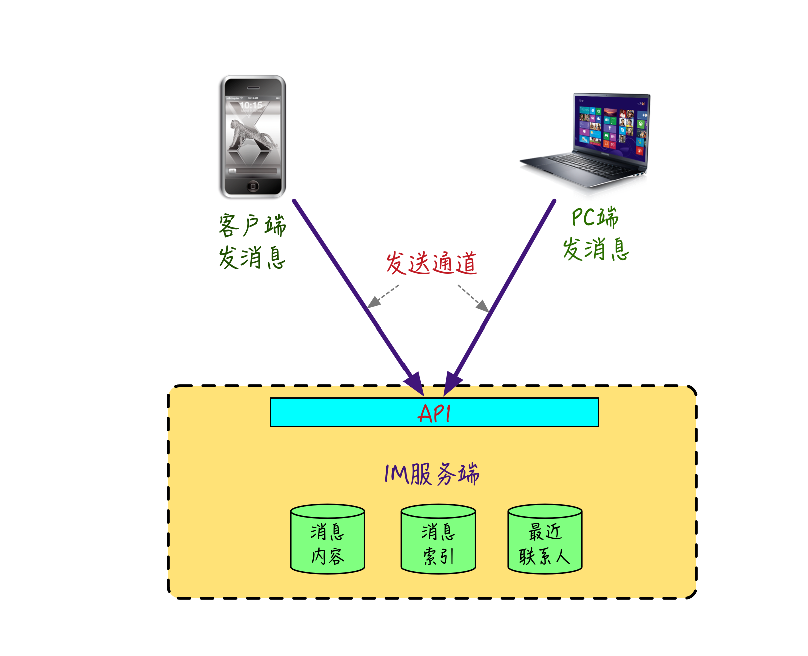
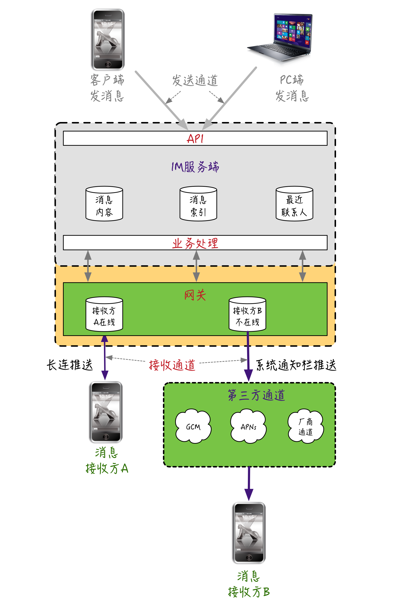

- 00 开篇词 搞懂“实时交互”的IM技术，将会有什么新机遇？.md.html
- 01 架构与特性：一个完整的IM系统是怎样的？.md.html
- 02 消息收发架构：为你的App，加上实时通信功能.md.html
- 03 轮询与长连接：如何解决消息的实时到达问题？.md.html
- 04 ACK机制：如何保证消息的可靠投递？.md.html
- 05 消息序号生成器：如何保证你的消息不会乱序？.md.html
- 06 HttpDNS和TLS：你的消息聊天真的安全吗？.md.html
- 07 分布式锁和原子性：你看到的未读消息提醒是真的吗？.md.html
- 08 智能心跳机制：解决网络的不确定性.md.html
- 09 分布式一致性：让你的消息支持多终端漫游.md.html
- 10 自动智能扩缩容：直播互动场景中峰值流量的应对.md.html
- 11 期中实战：动手写一个简易版的IM系统.md.html
- 12 服务高可用：保证核心链路稳定性的流控和熔断机制.md.html
- 13 HTTP Tunnel：复杂网络下消息通道高可用设计的思考.md.html
- 14 分片上传：如何让你的图片、音视频消息发送得更快？.md.html
- 15 CDN加速：如何让你的图片、视频、语音消息浏览播放不卡？.md.html
- 16 APNs：聊一聊第三方系统级消息通道的事.md.html
- 17 Cache：多级缓存架构在消息系统中的应用.md.html
- 18 Docker容器化：说一说IM系统中模块水平扩展的实现.md.html
- 19 端到端Trace：消息收发链路的监控体系搭建.md.html
- 20 存储和并发：万人群聊系统设计中的几个难点.md.html
- 21 期末实战：为你的简约版IM系统，加上功能.md.html
- 22 答疑解惑：不同即时消息场景下架构实现上的异同.md.html
- 结束语 真正的高贵，不是优于别人，而是优于过去的自己.md.html
- 捐赠
02 消息收发架构：为你的App，加上实时通信功能
你好，我是袁武林。
前一篇文章中，我们从使用者的直观角度和从业者的实现维度，了解一个IM系统都应该具备哪些要素。但实际上，从我的角度来看，我更倾向于把“IM”看作是一门可以融入到各种业务系统中，为业务系统提供“实时交互”能力的技术模块。
比如，极客时间想在它的App中增加一个互动模块，支持用户点对点的实时聊天功能。那么，我们就可以相应地通过一些IM SDK的方式，快速地把即时消息的技术引入到已有的业务系统中。
同样，一个传统的视频网站如果想让自己的视频支持弹幕功能，也可以通过引入即时消息的技术，来让视频弹幕的参与者能实时、高效地和其他观看者进行各种互动。
所以，从某种程度上看，随着移动网络的快速发展以及资费的快速下降，即时消息技术也越来越多地被广泛应用到各种业务系统中，用于提升用户实时互动的能力。
那么，接下来，我们就一起从即时消息更细化的实现角度来看一看，给一个已有系统增加即时消息功能，大致上都有哪些具体工作。

如果为原有的业务系统增加实时消息模块，在不需要重建账号体系的前提下，整体上大概包括几块内容：
一般来说首先需要制定好消息内容和未读数的存储，另外需要建立比原业务系统更加高效实时的消息收发通道，当然也包括依托第三方辅助通道来提升消息到达率。
下面我们分别来看一下各部分大体需要做的工作都包括哪些。
消息存储
我们回想一下上一篇的内容，即时消息系统中，消息作为互动的载体，是必不可少的要素之一。
一般来说，大部分即时消息系统为了便于查看历史消息或者用于暂存离线消息，都需要对消息进行服务端存储，因此，我们先来看一看，这些互动过程产生的消息在服务端应该怎么存储或者暂存。
消息索引和消息内容
这里，我以点对点消息的存储为例，来讲解一下。
点对点消息的参与方有两个：消息发送方和消息接收方。收发双方的历史消息都是相互独立的。互相独立的意思就是：假设发送方删除了某一条消息，接收方仍然可以获取到这条消息。
所以，从库表的设计上分析，这里需要索引表中收发双方各自有一条自己的索引记录：一条是消息发送方的发件箱索引，另一条是消息接收方的收件箱索引。
由于收发双方看到的消息内容实际都是一致的，因此还需要一个独立的消息内容表。
消息内容表用于存储消息维度的一些基本信息，比如消息ID、消息内容、消息类型、消息产生时间等。收发双方的两个索引表通过同一个消息ID和这个内容表关联。
这里假设张三给李四发送一条消息，消息存储在MySQL，或者类似的关系型数据库中，那么上面涉及的两张表大致如下：
- 内容表
- 索引表

比如张三给李四发了一条“你好”的消息，那么这个动作会向内容表存储一条消息。这条消息内容是这样的：ID为1001，消息内容是“你好”，消息类型是文本消息，还有当时消息创建的时间。
并且，它同时会往索引表里存储两条记录。
一条是张三的索引：内容有会话对方的UID（李四的UID），是发件箱的索引（也就是0），同时记录这条消息的内容表里的消息ID为1001。
另一条是李四的索引：内容有会话对方的UID（张三的UID），是收件箱的索引（也就是1），同样也同时记录这条消息的内容表里的消息ID为1001。
联系人列表
有了消息和索引后，如上一篇中的描述，一般IM系统还需要一个最近联系人列表，来让互动双方快速查找需要聊天的对象，联系人列表一般还会携带两人最近一条聊天消息用于展示。
这里你需要理解的是，和消息索引表的存储逻辑相比，联系人列表在存储上有以下区别。
- 联系人列表只更新存储收发双方的最新一条消息，不存储两人所有的历史消息。
- 消息索引表的使用场景一般用于查询收发双方的历史聊天记录，是聊天会话维度；而联系人表的使用场景用于查询某一个人最近的所有联系人，是用户全局维度。
在库表的设计上，联系人列表的存储实际和消息索引表类似，只不过消息索引表在接收到消息时，大部分情况都是插入操作，而联系人列表很多时候是更新操作。
- 最近联系人表

还是刚才那个例子，张三给李四发完消息后，除了在内容表和索引表插入记录，还会更新各自的最近联系人表，这里需要分别更新张三的最近联系人表和李四的最近联系人表。
比如更新张三的最近联系人表，如果和李四之前没有聊天记录，那么新插入一条联系人记录。联系人的对方UID为李四的UID，和这个联系人最新的一条消息ID是1001。
如果张三和李四之前已经有过聊天记录，那么只需要更新张三和李四的最新的一条聊天消息ID为1001，同样的办法再更新一次李四的联系人列表。
以上就是消息存储部分最重要的三个表，消息内容表、消息索引表、联系人列表。它们大致的存储结构，我们就设计好了。
消息收发通道
设计好消息的存储结构后，接下来，我们需要考虑的是：如何将消息发出去，以及怎么把消息投递给接收方。这里逻辑上涉及了两条通道：一条是消息发送通道，一条是消息接收通道。
发送方通过发送通道把消息从本地发送到IM服务端；IM服务端通过接收通道把消息投递给接收方。
消息发送通道
发送通道的实现上有很多种方式，比如下面的两种。
- IM服务端提供一个HTTP协议的API接口，客户端需要发送消息时，调用这个接口把消息发给IM服务端。
- 客户端和IM服务端维护一个TCP长连接，客户端有消息发送时，会以私有协议来封装这条要发送的消息，然后通过这个TCP长连接把消息发给IM服务端。

所以，发送通道的实现相对比较简单，重点在于：IM服务端提供消息发送的API，发送方可以通过任意方式调用到这个API，把消息发出去即可。
消息接收通道
对于我们最常见的非P2P模式的IM系统来说，由于有一条消息要投递给某个接收方这个事件，接收方并没有办法能实时知道，只有IM服务端收到发送方发出的消息时能实时感知到，因此消息投递这个动作一般都是IM服务端触发的（这里，我们不去讨论由接收方通过轮询获取消息的模式）。
下面，我画了一张图来说明接收通道的业务逻辑，目前业界在消息接收通道的实现上较多采用的方式是下面这样的。

解释一下这张图。
IM服务端的网关服务和消息接收方设备之间维护一条TCP长连接（或者Websocket长连接），借助TCP的全双工能力，也就是能够同时接收与发送数据的能力。当有消息需要投递时，通过这条长连接实时把消息从IM服务端推送给接收方。
对于接收方不在线（比如网络不通、App没打开等）的情况，还可以通过第三方手机操作系统级别的辅助通道，把这条消息通过手机通知栏的方式投递下去。
这里简单解释一下，常见的第三方操作系统级别的辅助通道。比如苹果手机的APNs（Apple Push Notification Service）通道、Android手机的GCM通道，还有各种具体手机厂商（如小米、华为等）提供的厂商通道。
这些通道由于是手机厂商来维护的，只要手机网络可通，因此可以在我们的App在没有打开的情况下，也能把消息实时推送下去。
当然，这些第三方操作系统级别的辅助通道也存在一些问题，因此大部分情况下也只是作为一个辅助手段来提升消息的实时触达的能力，这个在后续课程中，我会再详细说明。
因此，对于消息接收通道，重点在于需要在IM服务端和接收方之间，维护一个可靠的长连接，什么叫可靠的长连接呢，这里的可靠可以理解为下列两种情况。
IM服务端和接收方能较为精确地感知这个长连接的可用性，当由于网络原因连接被中断时，能快速感知并进行重连等恢复性操作。
可靠性的另一层含义是：通过这个长连接投递的消息不能出现丢失的情况，否则会比较影响用户体验。这个问题的解决会在后续第3篇的课程中来详细展开。
我在上面大概说明了一下，逻辑上消息收发通道各自的作用和一般的实现，当然这两条通道在实际的实现上，可以是各自独立存在的，也可以合并在一条通道中。
消息未读数
现在我们有了消息的收发通道和消息的存储，用户通过发送通道把消息发到IM服务端，IM服务端对消息内容、收发双方的消息索引进行存储，同时更新双方的最近联系人的相关记录，然后IM服务端通过和消息接收方维护的接收通道，将消息实时推送给消息接收方。
如果消息接收方当前不在线，还可以通过第三方操作系统级别的辅助通道，来实时地将消息通过手机通知栏等方式推送给接收方。
整体上来看，一条消息从发送、存储、接收的生命之旅基本上比较完整了，但对于即时消息的场景来说，还有一个比较重要的功能，会对双方在互动积极性和互动频率上产生比较大的影响，这个就是消息的未读数提醒。
用过QQ、微信的用户应该都有一个比较明显的感知，很多时候为了避免通知栏骚扰，会限制掉App在通知栏提醒权限，或者并没有注意到通知栏的提醒，这些情况都可能会让我们无法及时感知到“有人给我发了新的消息”这个事情。
那么作为一个重要的补救措施就是消息的未读提醒了。就我个人而言，很多时候是看到了QQ或者微信App的角标，上面显示的多少条未读消息，才打开App，然后通过App里面具体某个联系人后面显示，和当前用户有多少条未读这个数字，来决定打开哪个联系人的聊天页进行查看。
上面通过未读提醒来查看消息的环节中涉及了两个概念：一个是我有多少条未读消息，另一个是我和某个联系人有多少条未读消息。
因此，我们在消息未读数的实现上，一般需要针对用户维度有一个总未读数的计数，针对某一个具体用户需要有一个会话维度的会话未读的计数。
那么，这两个消息未读数变更的场景是下面这样的：
- 张三给李四发送一条消息，IM服务端接收到这条消息后，给李四的总未读数增加1，给李四和张三的会话未读也增加1；
- 李四看到有一条未读消息后，打开App，查看和张三的聊天页，这时会执行未读变更，将李四和张三的会话未读减1，将李四的总未读也减1。
这个具体的未读数存储可以是在IM服务端（如QQ、微博），也可以是在接收方的本地端上存储（微信），一般来说，需要支持“消息的多终端漫游”的应用需要在IM服务端进行未读存储，不需要支持“消息的多终端漫游”可以选择本地存储即可。
对于在IM服务端存储消息未读数的分布式场景，如何保证这两个未读数的一致性也是一个比较有意思的事情，这个问题我会留到第6篇来和你详细讨论。
小结
上面我们从一条消息“产生、存储、接收”的整个生命周期出发，较为系统地从实现的角度上对消息系统的几个关键部分进行了讲述。可以简单地总结为下面几点。
消息的发送方通过发送通道来把消息提交到IM服务端。
IM服务端接收到发送的消息后，会进行消息的存储以便于后续历史消息的查看，消息的存储从实现上可以分为：消息内容存储、消息索引存储、最近联系人列表存储。
IM服务端接收到发送的消息后，还会针对接收方进行未读数的变更，以提醒用户查看未读的消息，消息未读数的实现上一般分为：用户维度的总未读和会话维度的会话未读。
IM服务端进行完消息存储和未读变更后，会通过接收通道把消息推送给接收方，接收通道一般是通过IM服务端和消息接收方之间维护的长连接来实现，还会使用第三方操作系统级别的辅助通道，来提升“自建的长连接不可用“时，实时触达的能力。
最后，留给你两个思考题。
1.消息存储中，内容表和索引表如果需要分库处理，应该按什么字段来哈希？ 索引表可以和内容表合并成一个表吗？
2.能从索引表里获取到最近联系人所需要的信息，为什么还需要单独的联系人表呢？
你可以给我留言，我们一起讨论。感谢你的收听，我们下期再见。
© 2019 - 2023 Liangliang Lee. Powered by gin and hexo-theme-book.